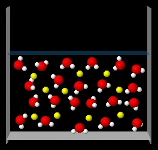

Cambios de fase 1
Pulsa sobre la siguiente figura y observa detalladamente la animación que aparece.
|  |
¿Que nombre darías al proceso que aparece en la animación?
Cambios de fase
| SUBLIMACIÓN | INCORRECTO. La sublimación es el paso de sólido a gas.
|
| DILUCIÓN | INCORRECTO. La dilución se produce al añadir un exceso de disolvente.
|
| EVAPORACIÓN | CORRECTO. Parte del disolvente pasa a la fase vapor.
|
| DESTILACIÓN | INCORRECTO. En la destilación se condensan los vapores del líquido evaporado.
|